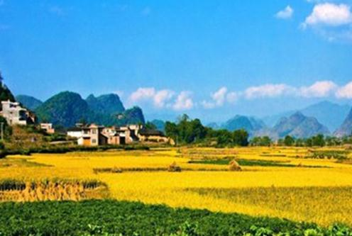
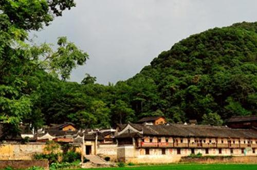
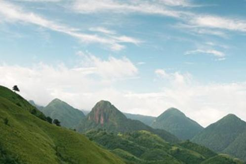
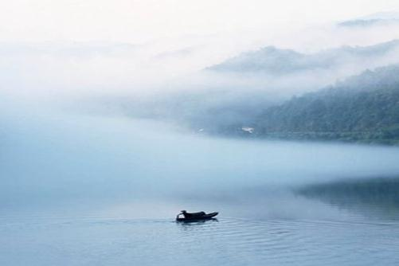

湖南江华，是世界瑶族人的老家， 只要是去江华旅游过的人，都会有一种感觉，这才是真正的世外桃源。绿色的雾江水载着山里人世世代代的梦想流向世界，融入大海，世界外面的人嗅着雾江水的甜美和碧绿寻觅而来。江华就是这般奇妙啊!
江华瑶族自治县，自古至今，人杰地灵，是全国瑶族人口最多、面积最大的瑶族自治县，被誉为“神州第一瑶城”。江华山清水秀，风光旖旎，是一座物产富饶、 琳琅满目的宝藏。江华冬无严寒，夏无酷暑，这里生态植被保护良好，丰富的森林资源、充沛的水能资源、富庶的农产资源、量大品高的矿产资源、引人入胜的旅游 资源，积聚了瑶山雄厚的发展底蕴。这里林海茫茫，林产丰茂。气候调节能力强，素有“华南之肺”的美誉;被称为“空气维生素”的负氧离子，最多处每立方厘米 达6万余个，有“天 然氧吧”之称，是休闲、度假、疗养的理想场所。
阳华胜迹 江华古八景之一，位于县城东南5公里处的竹园寨回山之下，岩上小山矗立，岩面向南宽敞，目前又发现了长达1000余米的洞内通道。洞中怪石嶙峋，泉水晶莹 透澈。唐元结任道州刺史时多次游于此，作《阳华岩铭并序》。著名书法家县令瞿令问将《铭》以隶篆籀三种书体命人刻于崖壁上，世称名迹。自唐代以后，历代游 人咏题甚多。1989年被定为省级文物保护单位，推介到海外各地，从此，来阳华岩的海内外游客络绎不绝。于今，它已成为人们寻胜探幽、观光游览的好地方。明代旅行家徐霞客曾慕名游 览，赞叹不已，称此景三湘绝有。
梧岭南屏 江华古八景之一，在河路口镇秀鱼塘一带。山势绵亘，高峻险阻，气势恢宏，犹若屏障，天然地将广西与湖南分开，又因此地南与苍松岭相接，故称“梧岭南屏”。 境内有高耸入云的姑婆山，登临远眺，可览广西钟山、富川及本省之宁远、道县，县内山峦激川尽收眼底。该处山体高大，海拔1740米以上的山峰有四座，马鞍 山海拔1846米为最高峰。山上森林茂密，自然资源丰富，现存5万余亩原始次生林及上千亩的天然峨掌松群落。有国家重点保护植物38种，国家重点保护珍稀 动物20多种。岭上经常弥漫云雾，白茫茫的，像海一样，那形势气象万千。云雾或散或聚，群峰忽隐忽现，给攀登的人增添了一股神秘的情趣。
“江 华八景”之说源于宋朝，其时人类活动集中在岭西一带，所以八景之中没有列入岭东更为丰富多彩的自然景观。随着江华人生存空间的拓展和社会的不断发展，江华 的风景线也在延伸。如穿岩通幽、天河瑶池、豸山凌云、西佛拱秀以及大瑶山独特的自然风光和民俗风情，又岂止八景。江华，以其充满魅力的旅游资源，期待更多 的世人认识它，开发它。
其实去永州江华旅游过的的，都会恋恋不舍结束了瑶都之行，瑶都的山、瑶都的水、瑶都的舞、瑶都的歌、瑶都的人给我们留下了深刻的印象!